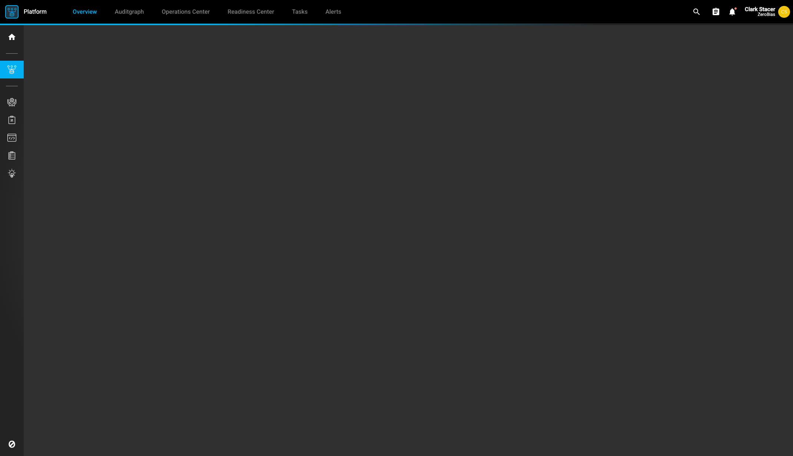
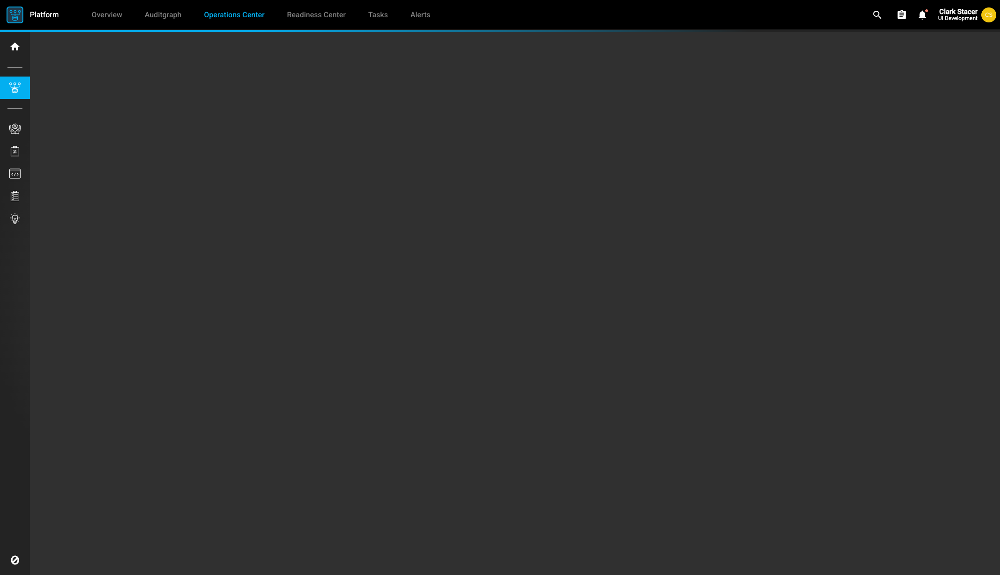
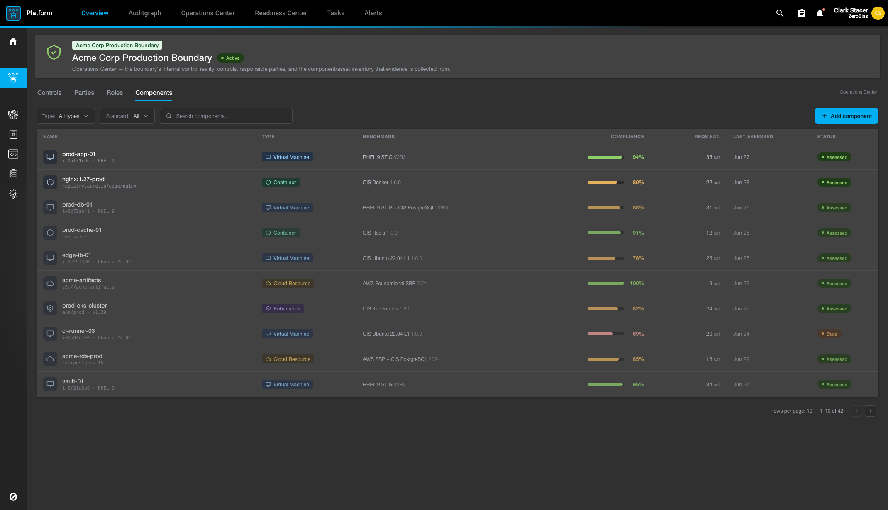

The Boundary Manager × Projects model — the Boundary is the runtime control plane; a Project is the measurement of it. What buyers buy is continuous assessment via automation, not audits.
CLARK · 2026-07-03 · COMPANION TO transparency-architecture · FOR BRIAN + KEVIN + NIC + ALL 3P DEVS
EXISTS shipped & verifiable today
PLANNED designed, FR filed, not yet built
TBD open question / naming not ratified
Filtering the doc to status: — — click the active chip again or "Show all" to clear.
We are continuous assessment via automation. Period. Buyers will not buy audits; they buy continuous assessment via automation.
— Brian Hierholzer, 2026-07-03
Two apps, two roles, one seam. The Boundary is the runtime control plane — the live, operating controls / tools / data / IAM / Components as they run. It holds reality and is continuously assessed; it does not measure itself. A Project is the measurement of that runtime — a requirement-product measurement of the boundary's System state, rolled up by domain, in layerable lenses. This doc is the compliance lens on top of the transparency substrate in transparency-architecture.
The one thing to understand first
If a design in any 3P app treats the boundary as a static manifest, or treats "an audit" as a first-class project / pipeline, it is the wrong design. Audit-as-a-project is dead (Tab 2). The audit report still exists — it is a windowed projection of continuous System state (residual exhaust), not a separate thing you build. Read every claim through the status legend above; backend FR ids (task-N) are cited inline, tracker of record is zb/ui .claude/docs/BACKEND_FEATURE_REQUESTS.md.
The swim-lane — two apps, two roles
The Boundary Manager App renders the System (runtime). The Projects App renders the measurement of it. The project measures the runtime; it does not own it.
Diagram 1
flowchart LR
subgraph BM["BOUNDARY MANAGER — the System (runtime control plane)"]
direction TB
C["Components RACI responsibility units"]
SW["Software inventory"]
TL["Tools / enforcement"]
IAM["IAM · controls · data per-instance SBOMs"]
end
subgraph PR["PROJECTS — measurement + commitment"]
direction TB
M["Requirement-product measurements by domain · layerable lenses"]
F["Findings failed measurements"]
end
BM -->|"state firehose · continuously assessed"| M
M -.->|"measures the runtime (does not own it)"| BM
M --> F
classDef sys fill:#1d2130,stroke:#f472b6,color:#e6e9f2,stroke-width:1.5px;
classDef proj fill:#1d2130,stroke:#38bdf8,color:#e6e9f2,stroke-width:1.5px;
class C,SW,TL,IAM sys
class M,F proj
Shift+scroll to zoom inline; □ to fit; ⛶ for fullscreen (Esc closes). Drag to pan.
Vocabulary discipline — load-bearing
In the project lens: measured / measurement / readiness
The requirement product is the instrument; the System runtime is the measured. The project measures the runtime — it does not own it. Never say "the boundary's control" in the project lens. Inventory-completeness and tool-coverage are measurements (requirement products) on a measurement layer, not a boundary-side "control group." Findings = failed measurements (missing-component / inventory-mismatch / missing-tool / ineffective-control).
Naming — what the thing is called at each layer
It is not called a "project." A platform.Project is only the structural container.
Layer
Status
Name
Product / what buyers buy
TBD
Continuous Assessment (via automation) — working product name, not ratified with Brian / Kevin.
In-app umbrella
TBD
a Compliance Readiness program (demo umbrella: "ZeroBias Compliance Readiness").
Under the hood
PLANNED
Projects (a Program + its Phases) that measure a Boundary (a System).
Audit = something reviewed as proof, passes or fails. That primitive survives and generates System state. The packaged annual deliverable is what is worthless.
— Kevin ↔ Brian, reconciled 2026-07-03
Three primary project types carry the logic: Program (the evergreen promise), Phase (the bounded build), Assessment (the bounded consumer of System state). Audit is a continuous verb, not a project.
Program / Phase / Assessment — the primary types
One primary type per project, plus stackable accessory types (Tab 3). A type bundles a lifecycle + a feature-set, and may imply a lifecycle (program ⇒ evergreen).
Type
Status
What it is
Program evergreen
PLANNED SC-008 / task-74
The ongoing umbrella that never completes ("the promise"). Owns the canonical requirement set + the phase plan; related children roll up to it; a top-tier program serves as a portfolio. Discharges its requirements to the Boundary / System. Carries an explicit version anchor on its requirement set (the version any report cites). Absorbs the earlier "commitment" concept.
Phase standard
PLANNED
A bounded build project that rolls its requirements up to a program; on completion its residual promotes to the program's capabilities (this defines "phase done"). Requires a program parent.
Assessment standard
TBD
A bounded project that performs an assessment ("audit without saying audit") — the point-in-time consumer that renders a deliverable from continuous System state (e.g. the blind-assessor's project). Assessment-vs-audit framing is a Brian / Kevin call.
Diagram 2
flowchart TB
PG["PROGRAM (evergreen) owns requirement set + phase plan version anchor · never completes"]
PH1["PHASE (standard) bounded build · rolls up to program"]
PH2["PHASE (standard) bounded build · rolls up to program"]
CAP["Program CAPABILITIES residual promotes on phase-done"]
ST["SYSTEM STATE validated snapshot (state over point)"]
AS["ASSESSMENT (standard) renders deliverable from System state"]
PG --> PH1
PG --> PH2
PH1 -->|promotes residual| CAP
PH2 -->|promotes residual| CAP
CAP --> PG
ST --> AS
AS -.->|residual exhaust = report| PG
classDef prog fill:#1d2130,stroke:#fbbf24,color:#e6e9f2,stroke-width:1.5px;
classDef phase fill:#1d2130,stroke:#38bdf8,color:#e6e9f2,stroke-width:1.5px;
classDef ass fill:#1d2130,stroke:#c084fc,color:#e6e9f2,stroke-width:1.5px;
class PG,CAP prog
class PH1,PH2 phase
class AS,ST ass
Phases roll up to the evergreen Program and promote residual to its capabilities; an Assessment renders a report from continuous System state.
Assessment (the verb) → System state (the noun) → Aperture (the lens)
Stateful assessment (the verb)
Automated assessment across all System Components, near-real-time, at extreme granularity / frequency — a Component state firehose, rolled up at project / program layers.
↓
System state (the noun)
A validated-assessment snapshot at an interval — state over point.
↓
Aperture (the lens)
Scope × time-window × frequency. Narrow = a point-in-time snapshot; wide = a year-long dataset. Aperture's primary job is DATA REDUCTION — it reduces the view, never the underlying records.
A traditional "audit report" = residual exhaust = a windowed Aperture projection of System state, generated at any point.
Aperture-the-lens is a boundary / runtime conceptKevin, 2026-07-03: aperture-the-lens is distinct from the inert aperturecontext tag (Tab 3). One reduces the assessment firehose to a consumable view; the other is just an organizational label.
The assessment primitive — Check → Finding
Invariant whether run by people or botsKevin's "audit = something reviewed as proof, passes or fails" = the assessment primitive = a Check → Finding (pass/fail). It survives and generates System state. Brian's "audit is worthless" = the packaged annual deliverable. Both are true at different levels.
Component — the boundary responsibility unit
Component = a responsibility unit whose spine is RACI PLANNEDResponsible / Accountable / Consulted / Informed over Parties + Roles. Single or grouped (same RACI → one component). Broad OSCAL-style types (software / service / hardware / … / policy / plan / procedure / standard) × technical|documentary. Carries an evidence obligation. Boundary "Teams" is dead — replaced by Parties + Roles + RACI.
Load-bearing means NOT a tag. lifecycle and types drive behavior and structure, so they are structural. context and domain organize, so they are tags. project-tier is gone.
— Kevin, project-model revision 2026-07-03
The old single "project flavor" is now four orthogonal axes: two structural (the platform acts on them) and two tag axes (organizational / filtering). If your code folds engagement / domain / tier into one projectTypeId, this is what to unwind.
The four axes
Diagram 3
flowchart TB
PJ["platform.Project"]
subgraph STRUCT["STRUCTURAL — the platform acts on it (SC-008 / task-74)"]
direction TB
LC["lifecycle standard | evergreen single-valued · defaults standard"]
TY["types primary: program / phase / assessment + stackable accessories"]
end
subgraph TAGS["TAGS — organize / filter (tag PR #8)"]
direction TB
CX["project-context project / workspace / aperture / thread = projectTypeId · inert · not load-bearing"]
DM["project-domain compliance / security / privacy / financial / ..."]
end
PJ --> LC
PJ --> TY
PJ --> CX
PJ --> DM
classDef p fill:#1d2130,stroke:#c084fc,color:#e6e9f2,stroke-width:1.5px;
classDef s fill:#1d2130,stroke:#34d399,color:#e6e9f2,stroke-width:1.5px;
classDef t fill:#1d2130,stroke:#8c93a8,color:#e6e9f2,stroke-width:1.5px,stroke-dasharray:5 4;
class PJ p
class LC,TY s
class CX,DM t
Two structural axes (green, platform-enforced) and two tag axes (grey, organizational). project-tier is gone — depth is derivable from the containment tree.
Axis
Kind
Status
Values / rule
lifecycle
structural
PLANNED
Enum, single-valued: standard (temporary; has an end) | evergreen (ongoing; never completes). Defaults to standard on create. A primary type may dictate it (program → evergreen).
types
structural
PLANNED
One primary (program / phase / assessment) + any number of stackable accessories (engagement, transparency-entangled, template, + domain-specific). Primary-first, with constraints (a phase needs a program parent; some types are mutually exclusive). An extensibility point — user-loadable feature packs "like making a Zoho app." entanglement is a feature, not structural.
project-context
tag
PLANNED
Organizational label: project / workspace / aperture / thread (extensible). "Tree-like if we want" — but NOT the structural parent-child hierarchy. Inert / not load-bearing. Renamed from project-type 2026-07-03. This is the axis projectTypeId points at.
lifecycle / types drive behavior / structure → structural. project-context / project-domain organize → tags. Both structural axes are filterable on searchProjects (lifecycles[], types[]) — superseding the engagement-query driver of PS-003 / PS-004, since engagement is now a type.
What this means for projectTypeId
⚠ The unwind (touches SME Mart / Parks)projectTypeId = the project-context tag axis (project / workspace / aperture / thread) — an organizational / nesting label, not load-bearing, and "tree-like if we want" (NOT an enforced matching depth label — entangled cross-org projects do not have to match). Net: projectTypeId carries only the context / nesting axis. Engagement, program, phase are types (structural); compliance / security / etc. are domain tags. If projectTypeId currently folds those in, that is what to unwind.
Assess with 100K assessors, pen-test with 10M pen-testers. Everyone in the marketplace is assessed all the time — a readiness mesh marketplace.
— Brian Hierholzer, 2026-07-03 (AuditCrowd)
Blind assessors, entangled at the task level into a seller's stack, build only automated assessment logic → findings against a digital twin. ZB dispatches to many, scores their logic, and — reflexively — assesses the assessors too. Assessment-at-scale is the AI moat: it trains ZB's own model with depth + variation.
Assessment at scale — the readiness mesh
Blind assessor / 3PAO
TBD
A separate party / project, entangled at the task level via linked projects into the seller's stack, working against a digital twin. Builds only automated assessment logic → findings. The logic is a scored product.
AuditCrowd
TBD
The ranked / scored assessor crowd at extreme scale. Each supplier is assessed by ~500 different assessors on different parts of the stack (variation-maximizing); ZB ranks + scores them.
Reflexive assessment
TBD
Assessors — and all transparency-marketplace participants — are themselves inside the ZB boundary and continuously assessed; their workstations boundary-scoped and hardened. Brian's "readiness mesh marketplace."
Diagram 4
flowchart LR
subgraph SUPPLY["SUPPLY SIDE — seller"]
direction TB
TWIN["seller stack digital twin (a System)"]
A1["blind assessor logic -> findings"]
A2["AuditCrowd ~500 per supplier variation-maximizing"]
end
TC["TRANSPARENCY CENTER the shared surface BETWEEN parties findings published in · consumers read out"]
subgraph DEMAND["CONSUMERS — demand side"]
direction TB
BUY["buyers"]
REG["regulators"]
IG["inspectors general"]
end
TWIN -->|task-level entanglement| A1
TWIN --> A2
A1 -->|findings| TC
A2 -->|findings| TC
TC -->|read| BUY
TC -->|read| REG
TC -->|read| IG
MESH["READINESS MESH everyone (assessors included) is inside the ZB boundary · continuously assessed"]
SUPPLY -.->|reflexive| MESH
DEMAND -.->|reflexive| MESH
classDef sys fill:#1d2130,stroke:#f472b6,color:#e6e9f2,stroke-width:1.5px;
classDef crowd fill:#1d2130,stroke:#fbbf24,color:#e6e9f2,stroke-width:1.5px;
classDef tc fill:#1d2130,stroke:#34d399,color:#e6e9f2,stroke-width:2px;
classDef cons fill:#1d2130,stroke:#38bdf8,color:#e6e9f2,stroke-width:1.5px;
classDef mesh fill:#161925,stroke:#5a6178,color:#8c93a8,stroke-width:1px;
class TWIN sys
class A1,A2 crowd
class TC tc
class BUY,REG,IG cons
class MESH mesh
The Transparency Center sits between the parties: the supply side (seller + AuditCrowd) publishes findings in; consumers (buyers / regulators / IGs) read out. Everyone — assessors included — is inside the ZB boundary and continuously assessed (reflexive).
RDF Compass alignment
The model lands on the RDF-Compass vocabulary (see transparency-architecture §11–12 for the full compass). The compliance-specific mappings:
Compliance concept
RDF-Compass / W3C
Requirement
owl:Class + sh:NodeShape
Check
SHACL validation
Finding
sh:ValidationResult; pass/fail = sh:conforms (validation-as-satisfaction, the C-1 amendment)
Boundary
System
System state
the validated-state snapshot
Aperture
the projection over the System that produces System state
Continuous assessment
append-only, hash-chained Records (C-3) + PROV-O provenance stream; read surface = Activity History (PS-006 / TS-002)
Program requirement-set version
the evergreen program pins its version (C-5); reports cite the version
Design guard (C-3)The assessment store must be append-only / hash-chained. "Reduce the data set" means Aperture narrows the view, never prunes the ledger.
Backend FRs
FR
id
What
Owner
Status
SC-008
task-74
lifecycle + types structural attrs on platform.Project + searchProjects filters
Nic
PLANNED
PS-003
task-30
generic tagIds[] filter on projectSearch (re-scoped off engagement)
## Glossary — Continuous Assessment model
- **Continuous Assessment** — the product: continuous, automated measurement of a runtime System against a requirement set. What buyers buy (not audits).
- **Boundary / System** — the runtime control plane: live controls / tools / data / IAM / components as they run. Continuously assessed; does not self-measure.
- **System state** — a validated-assessment snapshot of the System at an interval ("state over point").
- **Aperture** — the lens (scope x time-window x frequency) that reduces the assessment firehose to a consumable view; reduces the view, never the ledger.
- **Program** — evergreen umbrella project (type=program); owns the requirement set + phase plan + version anchor; a top-tier program is a portfolio.
- **Phase** — bounded build project (type=phase); rolls requirements up to a program; residual promotes to program capabilities on completion.
- **Assessment** — bounded project (type=assessment) that renders a deliverable from continuous System state.
- **Check -> Finding** — the assessment primitive: a pass/fail review, invariant whether run by people or bots; generates System state.
- **Finding** — a failed measurement (missing-component / inventory-mismatch / missing-tool / ineffective-control).
- **Component** — a boundary responsibility unit; spine is RACI over Parties + Roles; broad OSCAL-style types; carries an evidence obligation. (Boundary "Teams" is dead.)
- **lifecycle** — structural enum on platform.Project: standard | evergreen.
- **types** — structural: one primary (program/phase/assessment) + stackable accessories; an extensibility point (user-loadable feature packs).
- **project-context** — inert tag axis (project/workspace/aperture/thread); what projectTypeId points at; not load-bearing.
- **project-domain** — tag axis: compliance/security/privacy/financial/clinical/quality/legal/esg/supply-chain.
- **AuditCrowd** — the ranked/scored blind-assessor crowd at extreme scale; ~500 assessors per supplier, variation-maximizing.
- **Readiness mesh** — every marketplace participant (assessors included) is inside the ZB boundary and continuously assessed.
Continuous Assessment
The product: continuous, automated measurement of a runtime System against a requirement set. What buyers buy (not audits).
Boundary / System
The runtime control plane: live controls / tools / data / IAM / components as they run. Continuously assessed; does not self-measure.
System state
A validated-assessment snapshot of the System at an interval ("state over point").
Aperture
The lens (scope × time-window × frequency) that reduces the assessment firehose to a consumable view; reduces the view, never the ledger.
Program
Evergreen umbrella project (type=program); owns the requirement set + phase plan + version anchor; a top-tier program is a portfolio.
Phase
Bounded build project (type=phase); rolls requirements up to a program; residual promotes to program capabilities on completion.
Assessment
Bounded project (type=assessment) that renders a deliverable from continuous System state.
Check → Finding
The assessment primitive: a pass/fail review, invariant whether run by people or bots; generates System state.
Finding
A failed measurement (missing-component / inventory-mismatch / missing-tool / ineffective-control).
Component
A boundary responsibility unit; spine is RACI over Parties + Roles; broad OSCAL-style types; carries an evidence obligation. (Boundary "Teams" is dead.)
lifecycle
Structural enum on platform.Project: standard | evergreen.
types
Structural: one primary (program/phase/assessment) + stackable accessories; an extensibility point (user-loadable feature packs).
project-context
Inert tag axis (project/workspace/aperture/thread); what projectTypeId points at; not load-bearing.
project-domain
Tag axis: compliance/security/privacy/financial/clinical/quality/legal/esg/supply-chain.
AuditCrowd
The ranked/scored blind-assessor crowd at extreme scale; ~500 assessors per supplier, variation-maximizing.
Readiness mesh
Every marketplace participant (assessors included) is inside the ZB boundary and continuously assessed.
Sources
Model source of truth: ~/Projects/zb/boundary-projects-mocks/MODEL.md (kept current by the zb/ui Director).
Current snapshots — more landing next syncThese PNGs are current captures from the Boundary Manager × Projects mock workspace. The full interactive HTML mock set is being finalized by the zb/ui Director (ui-meta-director) and will be added on the next sync. Treat the visuals as directional, same as the model.
Boundary Manager App — the System (runtime control plane)

Boundary Manager — overview shell (the app frame).

Operations Center — Components / Software / Tools inventories (the runtime).

bm-components-list — Components as RACI responsibility units.